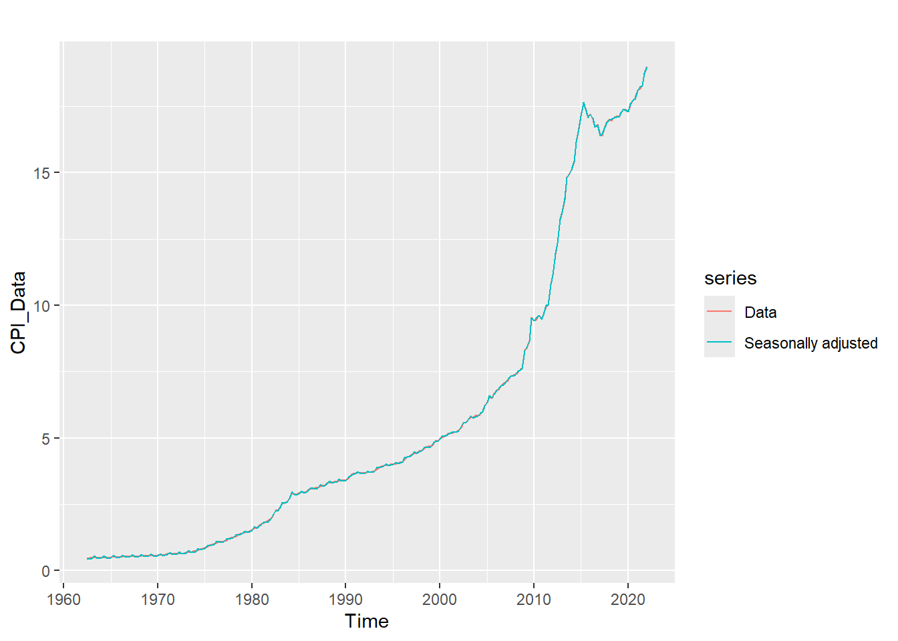
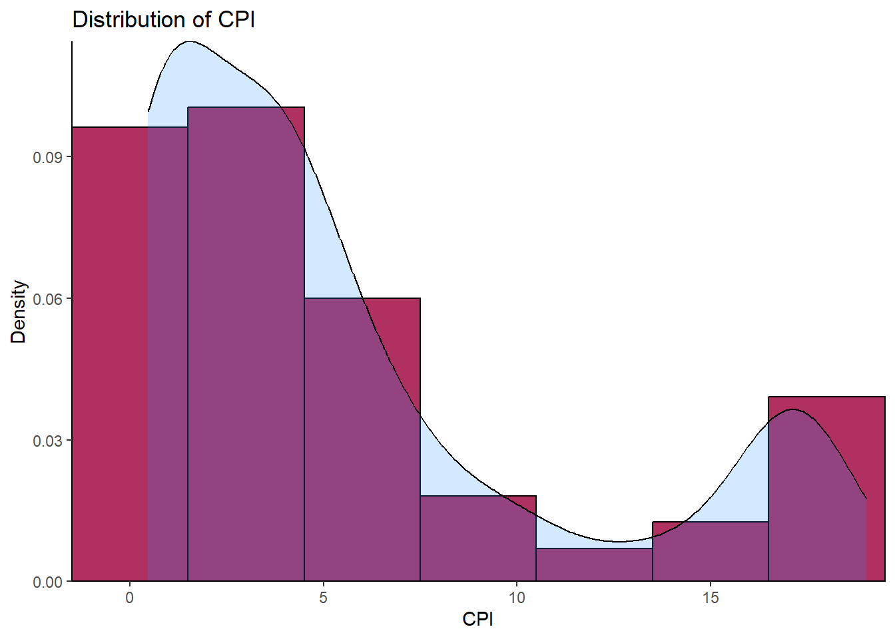
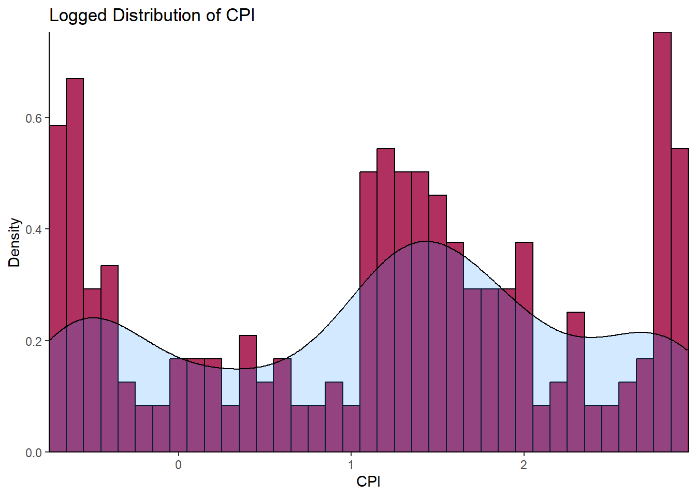
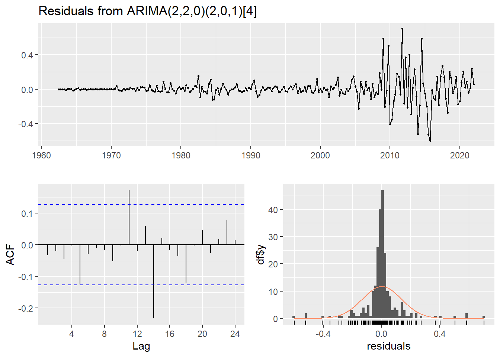

Consumer Price Index (CPI) is defined as a measure of the weighted aggregate change in retail prices paid by consumers for a given basket of goods and services.
The CPI is a statistical indicator of changes in consumer prices experienced by citizens of a country. It is a measure of comparing the cost of a fixed basket (234 items) of goods and services purchased by consumers over time. The CPI index reflects only pure price change and is a widely used consumer prices or the rate of inflation, which is the percentage change of CPI over one year (KNBS, 2010).
CPI is a univariate non-stationary time series variable which does not have significant seasonality. Univariate because it is a single variable that predicts (or correlates to) itself based on its own history (auto-regressive) as opposed to an ordinary regression variable that is predicted by one or more variables of different nature. Again, CPI is a time series variable since observed values are indexed in time. The fact that it naturally has an upward trend, possibly due to increasing population, changing lifestyles of people, and a generally growing economy means it is not stationary. Another important characteristic of CPI is periodicity. That is, observations are made more than once a year, in this case twelve times per year. Further, this shows that CPI are monthly realizations of onward (monotone increasing) right-continuous random variable in positive real line.
The data I will be using is obtained from here and runs from March 1962 to September 2020.
2) Loading the Required Packages
The following packages are required to perform this modelling; -
library(readxl)library(tidyverse)
── Attaching core tidyverse packages ──────────────────────── tidyverse 2.0.0 ──
✔ dplyr 1.1.4 ✔ readr 2.1.5
✔ forcats 1.0.0 ✔ stringr 1.5.1
✔ ggplot2 3.5.1 ✔ tibble 3.2.1
✔ lubridate 1.9.3 ✔ tidyr 1.3.1
✔ purrr 1.0.2
── Conflicts ────────────────────────────────────────── tidyverse_conflicts() ──
✖ dplyr::filter() masks stats::filter()
✖ dplyr::lag() masks stats::lag()
ℹ Use the conflicted package (<http://conflicted.r-lib.org/>) to force all conflicts to become errors
library(forecast)
Registered S3 method overwritten by 'quantmod':
method from
as.zoo.data.frame zoo
Attaching package: 'data.table'
The following objects are masked from 'package:lubridate':
hour, isoweek, mday, minute, month, quarter, second, wday, week,
yday, year
The following objects are masked from 'package:dplyr':
between, first, last
The following object is masked from 'package:purrr':
transpose
library(here)
here() starts at C:/Users/CORNELIUS/OneDrive/Folders/Personal Projects/personal_quarto_website
3) Loading Data
# import dataCPI_Data <-read_excel(here("./Data/Historical CPI series 2020.xlsx"))
New names:
• `` -> `...2`
• `` -> `...3`
# view datahead(CPI_Data, 10)
# A tibble: 10 × 3
`MONTHLY CPI FROM 1962` ...2 ...3
<chr> <chr> <chr>
1 <NA> <NA> <NA>
2 Year Month Index
3 1962 Mar 0.47503449374032269
4 <NA> Jun 0.48014239152247667
5 <NA> Sep 0.48525028930463066
6 <NA> Dec 0.49035818708678469
7 1963 Mar 0.48525028930463066
8 <NA> Jun 0.49035818708678469
9 <NA> Sep 0.50057398265109265
10 <NA> Dec 0.50568188043324669
The column names are in row 2, this can be corrected as;
# assign headers colnames(CPI_Data) <- CPI_Data[2, ]# drop records when Month is blank or has the string "Month"CPI_Data_clean <- CPI_Data %>%filter(!is.na(Month) & Month !="Month")# fill in blank yearsCPI_Data_clean <- CPI_Data_clean %>%fill(Year, .direction ="down") %>%mutate(Index =as.numeric(Index),Year =as.numeric(Year))# view datahead(CPI_Data_clean, 10)
# A tibble: 10 × 3
Year Month Index
<dbl> <chr> <dbl>
1 1962 Mar 0.475
2 1962 Jun 0.480
3 1962 Sep 0.485
4 1962 Dec 0.490
5 1963 Mar 0.485
6 1963 Jun 0.490
7 1963 Sep 0.501
8 1963 Dec 0.506
9 1964 Mar 0.501
10 1964 Jun 0.501
4) Declaring CPI as Time Series
CPI_Data_ts <- CPI_Data_clean %>%select(Year, Month, Index) %>%ts(start =c(1962, 3), end =c(2020,9), frequency =1) class(CPI_Data_ts) # Check the class, technically this is a univariate ts
Warning: Using `size` aesthetic for lines was deprecated in ggplot2 3.4.0.
ℹ Please use `linewidth` instead.
`geom_smooth()` using formula = 'y ~ s(x, bs = "cs")'
Figure 1 above shows upward rise in CPI over the years, the upwardness is indicative of trend, and therefore non-stationarity. This further implies that the CPI is constituted by multiplicative components; trend, seasonality, and random effects. Since it is multiplicative, applying log-transformation makes it easy to extract the random component by differencing, which also stabilizes variance and reduces seasonality. Even though the plot is ragged, seasonality is not immediately evident.
To extract seasonality, Seasonal Trend Loess decomposer (tslm()) is invoked. The decomposer, which works better than decompose(), is used for periodic time series, the periodicity (seasonal window) here is 4 months.
The plot above shows the individual components of CPI;
Trend,
Seasonality, and
Random error. Here, seasonal fluctuations are more evident. The trend has been smoothed, i.e. it is devoid of seasonality and random error. To explore seasonality:-
adjust_df <- CPI_Data - components[, 'season']autoplot(CPI_Data, series ="Data") +autolayer(adjust_df, series ="Seasonally adjusted")

It is evident that the rate of consumption exponentially rose in the early ’80s to early ’90s. The sinusoidal aspect of seasonality is revealed by the plot below. Consumption goes down in April by a seasonal effect of 0.25 and goes up around July by an effect of 0.65 every year.
plot(window(components[,3],start =c(2016,1),end =c(2018,1)),main ="Seasonlity of CPI, 2016 to 2018",xlab ="Months",ylab ="Effects",col ="maroon",lwd =2.5)abline(h =seq(-.7,.7,.1),v =seq(2016, 2018, 1/12),col ="grey",lty =2)
The above stem-and-leaf diagram shows the skewed distribution that CPI assumes. The skewness is to right.
ii) Histogram
The histogram in the figure below is skewed to the right, confirming what we found with the stem-and-leaf diagram. This skewness implies the data is not normally distributed. Furthermore, the skewness calls for log-transformation of the data.
ggplot(CPI_Data, aes(x = CPI_Data)) +geom_histogram(aes(y = ..density..),binwidth =3, colour ="black", fill ="maroon")+geom_density(alpha = .2, fill ="dodgerblue1")+labs(title ="Distribution of CPI",x ="CPI", y ="Density")+scale_y_continuous(expand =c(0,0))+scale_x_continuous(expand =c(0,0))+theme_classic()
Warning: The dot-dot notation (`..density..`) was deprecated in ggplot2 3.4.0.
ℹ Please use `after_stat(density)` instead.

Histogram of Log Transformed CPI
LoggedCPI <- CPI_Data %>%log() ggplot(LoggedCPI, aes(x = LoggedCPI)) +geom_histogram(aes(y = ..density..),binwidth =0.1, colour ="black", fill ="maroon")+geom_density(alpha = .2, fill ="dodgerblue1")+labs(title ="Logged Distribution of CPI",x ="CPI", y ="Density")+scale_y_continuous(expand =c(0,0))+scale_x_continuous(expand =c(0,0))+theme_classic()

The histogram above with a superimposed kernel density plot for CPI log-transgeomed gives a vague hint of a bimodal distribution. This needs further transformation.
iii) Q-Q Plot
The plot below clearly illustrates how far the CPI is from the normal distribution. QQ Plots compare observed data to standardized theoretical normal data. The closeness of the plot to straight line indicates the closeness of the observed data to being normally distributed. For our case, the CPI deviates away at the tails to form an S-curve that defies normality.
ggplot(CPI_Data, aes(sample=CPI_Data))+stat_qq(color ="maroon")+labs(title ="Q-Q Plot of CPI",x ="Theoretical", y ="Sample")+theme_classic()
Don't know how to automatically pick scale for object of type <ts>. Defaulting
to continuous.
8) Checking Normality Formally
i) Jarque Bera Test
CPI_Data %>%jarque.bera.test() # From package "tseries"
Jarque Bera Test
data: .
X-squared = 57.318, df = 2, p-value = 3.577e-13
The hypothesis for this test is:-
\(H_0\): CPI is normally distributed,
\(H_a\): CPI is not normally distributed.
Here, the p-value is smaller than 0.05 and thus we reject \(H_0\) and conclude at 95% level of confidence that CPI is indeed significantly skewed.
9) Testing Stationarity Pictorially
a) Lagged Plots
The figure below shows plots of lags 1 to 20. The fact that there is a strong persistence of a straight line (autocorrelation) for lags above 20 excludes the dominance of an MA(q) in the series and gives a strong evidence for an AR(p). This persistence is due to the strong correlation (0.987) at lag one. This property is also called long memory. However, the series cannot be simply an AR(p) since the order of such an AR(p) would be too large a number and parsimony (idea of Occult’s Razor) would be violated. Therefore, the lagged plots give evidence of an ARMA(p,q) being the underlying best-case scenario.
The figure below is a correlogram of ACF and ACF of CPI for the first 80 lags. The slowly decaying property in ACF further gives evidence of the series being non-stationary and hence an AR(p). Because of the trend, the observations will usually be on the same side of the series’ global mean. The terms \((X(t+k)−μ(X))(X(t)−μ(X))\) are positive, for this reason, the ACF is positive as well and is close to one, i.e. 0.987 at lag 1. The smooth, linear decline in ACF also is an indicator of the insignificance of the seasonal effect in the series as opposed to a wave-like decline for the seasonally strong series. Notice that ACF comes to zero at lag about 78, this is too persistent an effect of long term memory.
The PACF cuts off immediately after the associated lag. This is typical of non-stationary processes.
a) Augmented Dickey-Fuller Test (tests for unit root)
The Augmented Dickey-Fuller (ADF) Test has the following hypothesis:
\(H_0\): Unit root exists (non-stationary)
\(H_1\): No unit root Exists (stationary)
adf.test(CPI_Data)
Augmented Dickey-Fuller Test
data: CPI_Data
Dickey-Fuller = -0.52375, Lag order = 6, p-value = 0.9802
alternative hypothesis: stationary
We fail to reject \(H_0\) at 95% confidence level because 0.999 > 0.05. The conclusion is that CPI for the period under study is not stationary. It follows from this conclusion that differencing is required to render the series stationary. As we have earlier deduced the underlying model to be ARMA(p,q), we now have a strong evidence for ARIMA (p,d,q) where d is the number of times required to difference to achieve stationarity.
b) Ljung-Box Text (tests for white noise)
Testing stationarity by checking whether the data is white noise, Ljung-Box (1978) test was made use of. The test is based on whether the sample autocorrelation is equal to zero:
\(H_0; ρ = 0\) White noise
\(H_1; ρ ≠ 0\) Not whote noise This test follows a Chi-square distribution. If the p-value is less than 0.05 at lag h degrees of freedom, #H_0$ is rejected and differencing is done.
The test statistic is given as; \(Q(h) = n(n+2)∑^h _{k=1}\frac{ρk}{(n−k)}\)
Clearly, the data is not white noise, we reject \(H_0\) and difference the data to obtain stationarity.
11) Automatic Fitting of ARIMA(p,d,q)
Having established that CPI follows an ARIMA (p,d,q) model, we go ahead to find the best fitting model using AIC and BIC as the tools for choosing the parsimonious fit. The package forecast with appropriate dependencies installed, we are saved the trouble of transfoming the data to stabilize variance and seasonality before manually differencing.
CPIfit <- CPI_Data %>%auto.arima(approximation =FALSE,stepwise =FALSE,trace =FALSE) # trace = TRUE will print all the possible modelssummary(CPIfit)
Series: .
ARIMA(2,2,0)(2,0,1)[4]
Coefficients:
ar1 ar2 sar1 sar2 sma1
-0.7461 -0.4174 -0.8993 -0.2587 0.8043
s.e. 0.0610 0.0596 0.0983 0.0644 0.0831
sigma^2 = 0.01867: log likelihood = 137.05
AIC=-262.1 AICc=-261.74 BIC=-241.29
Training set error measures:
ME RMSE MAE MPE MAPE MASE
Training set 0.002888028 0.1346216 0.06989758 0.08317552 1.286139 0.2097828
ACF1
Training set -0.03239534
Notice that by setting approximation = FALSE and stepwise = FALSE a more advanced/rigorous search for a model in conducted. The best model has the smallest BIC and AIC. The non-seasonal order (2,2,0) means the series has a moving average of order 0, an autoregressive component of order 2, and the ARMA is differenced twice (d = 2) to achieve stationarity. The mathematical model is the product of MA and AR components.
A pure AR(p) model is one where \(Y_t\) depends only on its own lags. That is, \(Y_t\) is a function of the ‘lags of \(Y_t\)’:
$$Y_t=α+β_1Y_{t−1}+β_2Y_{t−2}+...β_pY_{t−p}+ϵ_1$$ A pure MA(q) is is one that \(Y_t\) depends only on the lagged forecast errors and is given by:
Substituting the coefficients, this becomes: $$Y_t=α-0.7461Y_{t−1}-0.4174Y_{t−2}-0.8993ϵ_{t−1}-0.2587ϵ_{t−2}+0.8043ϵ_{t−3}$$
a) Check Residuals for White Noise
checkresiduals(CPIfit)

Ljung-Box test
data: Residuals from ARIMA(2,2,0)(2,0,1)[4]
Q* = 5.0548, df = 3, p-value = 0.1678
Model df: 5. Total lags used: 8
There are a few significant spikes in the ACF, and the model fails the Ljung-Box test. The model can still be used for forecasting, but the prediction intervals may not be accurate due to the correlated residuals. Sometimes it is just not possible to find a model that passes all of the tests.
b) Forecasting
CPIforecast <- CPIfit %>%forecast(h =125, # Forecast 5 (each with 4 seasons) years ahead of Sept 2020level =c(95, 99))# summary(CPIforecast) # Print forecasts
c) Visualising Forecasts
CPIforecast %>%autoplot() +theme_bw()
The point forcasts with both 95% CI and 99% CI are contained in summary(CPIforecast) for 33 years (each with 4 seasons) ahead of 2020, that is upto Q2 2053.
End
Note: This post was first published by the author in RPubs in 2019.